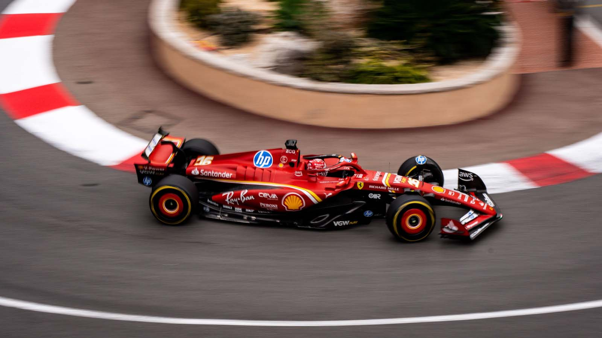

Formula 1 je najprestižnije natjecanje u svijetu automobilizma, poznato po svojoj brzini, tehnologiji i globalnoj popularnosti. Utrke se voze na posebno dizajniranim stazama diljem svijeta, a vozači se natječu u bolidima visoke tehnologije koji mogu dosegnuti brzine veće od 350 km/h. Svaka sezona Formule 1 sastoji se od više utrka poznatih kao Grand Prix, a momčadi i vozači skupljaju bodove prema plasmanu na svakom natjecanju.
Formula 1 sezona sastoji se od više Grand Prix utrka koje se održavaju na različitim lokacijama diljem svijeta, uključujući Monako, Italiju, Veliku Britaniju i Japan. Svaka utrka ima jedinstvene izazove, od tehničkih zavoja do visokih brzina na pravcima. Vozači i timovi skupljaju bodove kroz sezonu, a najbolji osvajaju naslov svjetskog prvaka u kategorijama vozača i konstruktora.
U Formuli 1 postoje dvije glavne ljestvice – poredak vozača i poredak konstruktora. Poredak vozača pokazuje koliko je koji vozač uspješan tijekom sezone, dok poredak konstruktora prati uspješnost momčadi, odnosno proizvođača bolida. Vozači poput Lewisa Hamiltona, Maxa Verstappena i Landa Norrisa često se bore za najviša mjesta na ljestvici, a timovi poput McLarena, Mercedesa i Ferrarija dominiraju scenom.
Utrka Formule 1 vozi se na unaprijed određen broj krugova, ukupne duljine oko 305 kilometara – osim u Monaku, gdje je staza kraća. Bodovi se dodjeljuju desetorici najboljih vozača, a pobjednik osvaja 25 bodova.
U svijetu Formule 1 koristi se mnogo specifičnih pojmova. Na primjer, pole position označava prvu startnu poziciju, koju vozač osvaja najboljim vremenom u kvalifikacijama. DRS je sustav koji omogućuje lakše pretjecanje otvaranjem stražnjeg krila bolida u određenim zonama staze. Pit stop je brzo zaustavljanje u boksu radi promjene guma ili manjih popravaka, dok safety car ulazi na stazu kad je potrebno usporiti utrku zbog nesreće ili opasnosti.
Za više informacija, posjetite službenu stranicu Formule 1.